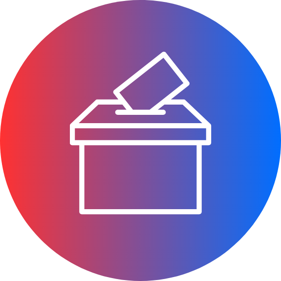
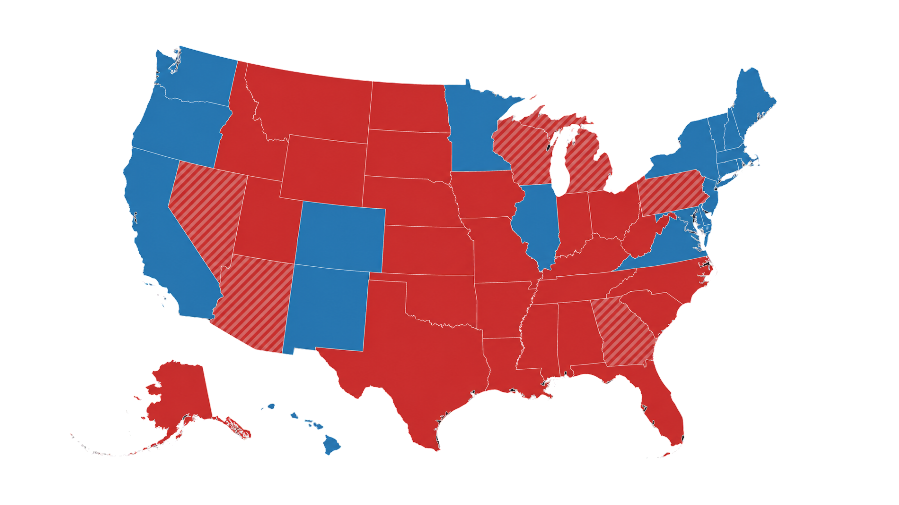
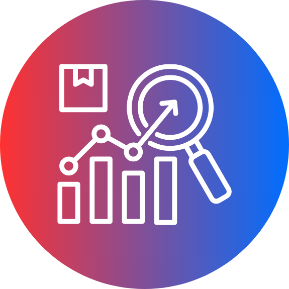
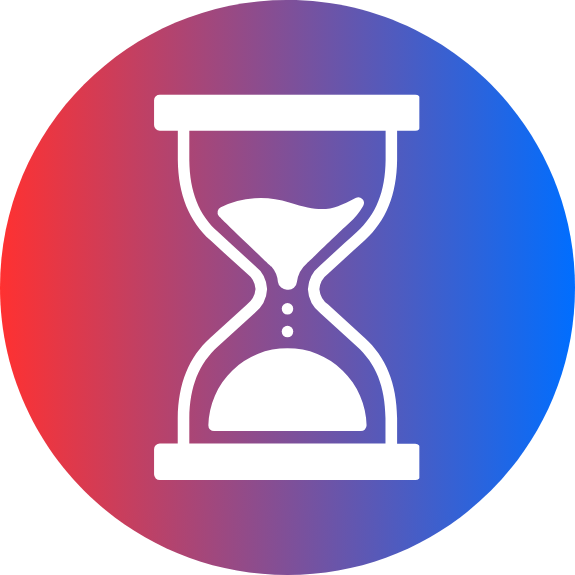

Election Results
We provide election results from all around the United States. However, we are currently working on major expansions that will soon offer elections from a significant amount of nations worldwide.

OVERVIEW
Here's a basic rundown of our services.

We provide election results from all around the United States. However, we are currently working on major expansions that will soon offer elections from a significant amount of nations worldwide.
Users can write about their own thoughts and analyses on political, economic and social issues. Polycivic is a hub for opinions and discussion among users.

One of our other primary services are forecasts for upcoming elections, which are heavily analyzed and reviewed. Users will find that predictions of candidate victories down to the county level are highly accessible.

As a method to keep you up to speed on the goings-on, we provide timelines in order for you to know when major elections, debates, deadlines, and key events are going to take place.
We analyze multiple prominent news outlets like MSNBC and ABC in an attempt to maximize transparency for users and eliminate as much bias as possible.
Misinformation damages public trust. Polycivic helps users separate fact from fiction by reviewing debates, public statements, documents, and claims from political leaders using reliable sources and clear, transparent fact-checking.
FEATURED
Here are some of our featured sites for the day.
Resets in 00:00:00
FAQ
Here are some of the questions we get a lot.
Our data is sourced from official government records, polling organizations, and historical archives.
While we primarily focus on American elections, we include international elections and forecasts from time to time.
Yes. If you have verified data or research, feel free to share it with us through our contributions page.
No, Polycivic is not associated with any political party. We are a nonpartisan platform committed to unbiased, fact-based reporting.
Yes, but please check our terms of use for guidelines on attribution and data usage.